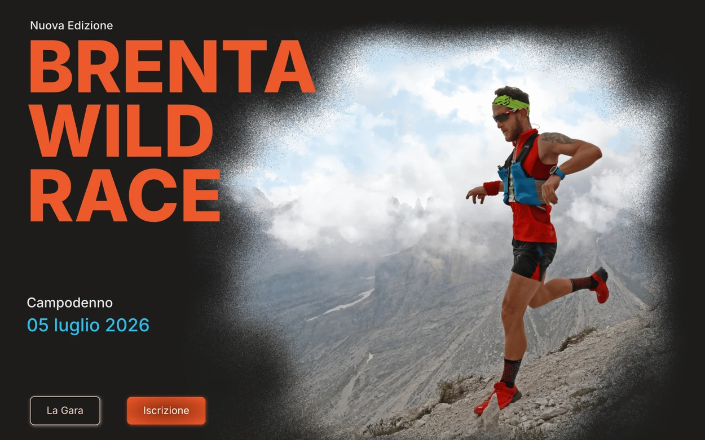
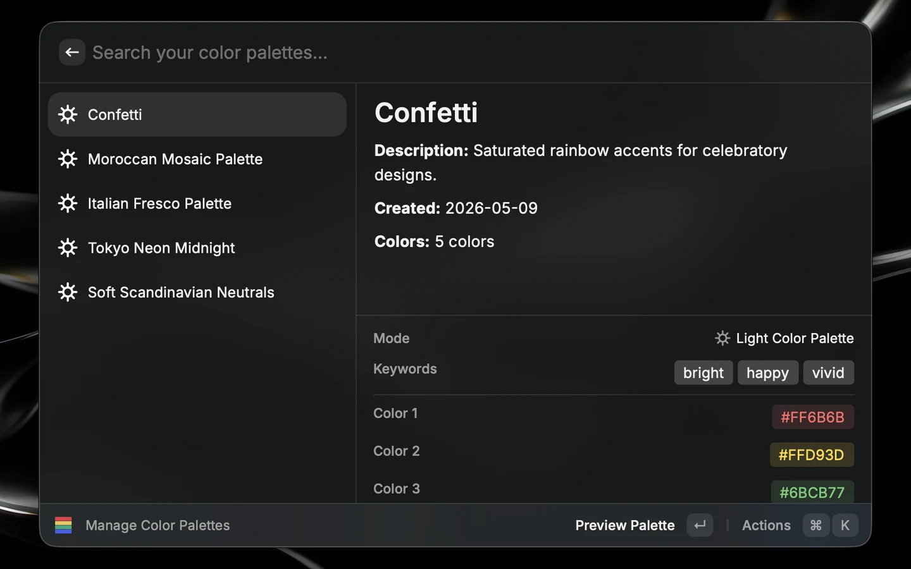
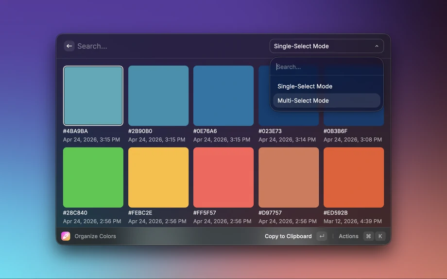

Web Design & Development · End-to-end
Brenta Wild Race
Designed and developed the complete website for a mountain running event — from information architecture and UX to visual design and implementation.
Experienced Software Developer with a PhD in Cognitive Neuroscience and a background in Data Science.
A selection of things I've built, designed, and contributed to.

Designed and developed the complete website for a mountain running event — from information architecture and UX to visual design and implementation.

Rebuilt an existing extension to create, manage, import and export color palettes, including AI-powered color generation.

Added multi-color selection and bulk export support, including JSON and CSS formats, to an existing Raycast extension.
Software development is my focus, shaped by a background in data science and cognitive neuroscience.
Building modern web applications and thoughtful user experiences, from architecture and implementation to production.
Analyzing complex data and developing data-driven solutions through statistical and computational methods.
PhD-level research studying visual perception, attention and human cognition.
Drag to rotate · Select a discipline to explore. Arrow keys to rotate · + / − to zoom · Home to reset.
From cognitive neuroscience to data science and software development, each chapter has shaped how I approach technical problems.
I studied cognitive science and began researching visual perception and attention through eye tracking, EEG and behavioral experiments. During this period, I co-authored my first peer-reviewed publication.
My PhD focused on visual attention in natural scenes, using MEG data and machine learning to decode patterns of brain activity.
I applied data science to real-world problems, working on predictive modeling, natural language processing, chatbots, geospatial analysis and user journey mapping.
I worked across data science and frontend development before focusing on software engineering, contributing to production e-commerce applications with React, Next.js and TypeScript.
I develop customer-facing features for EasyWP, Namecheap's managed WordPress platform. My work includes feature delivery, billing and security-related interfaces, code reviews and production issue resolution.
Outside work, I build and contribute to open-source Raycast extensions.